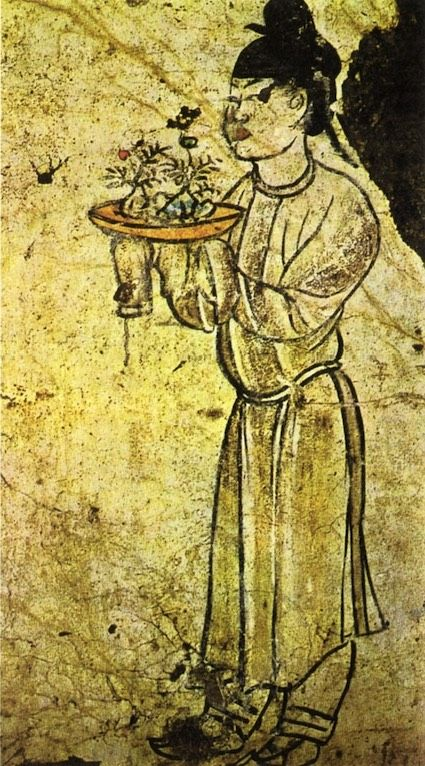

 Many believe that these miniature trees originated from Japan, but they first appeared in the mountains of China. According to Asashi Nakamura from "Bonsai Tree Gardener.com", first mentions of the trees did not appear in documented form until around 600 A.D. and the first picture didn't appear until 706 A.D in the tomb of Prince Zhang. The people of china were mesmerized by this small tree and Nakamura even claims that they believe that anything “mini” contained magical properties.
Therefore, as popularity for these trees grew, the smaller they became. The interest in bonsai trees only grew with the development of chinas ceramic industry as the intricate ceramics only enhanced the beauty of the mini tree. In fact,Bonsaiboy.com claims that the literal translation of bansai means “tree in a tray”"